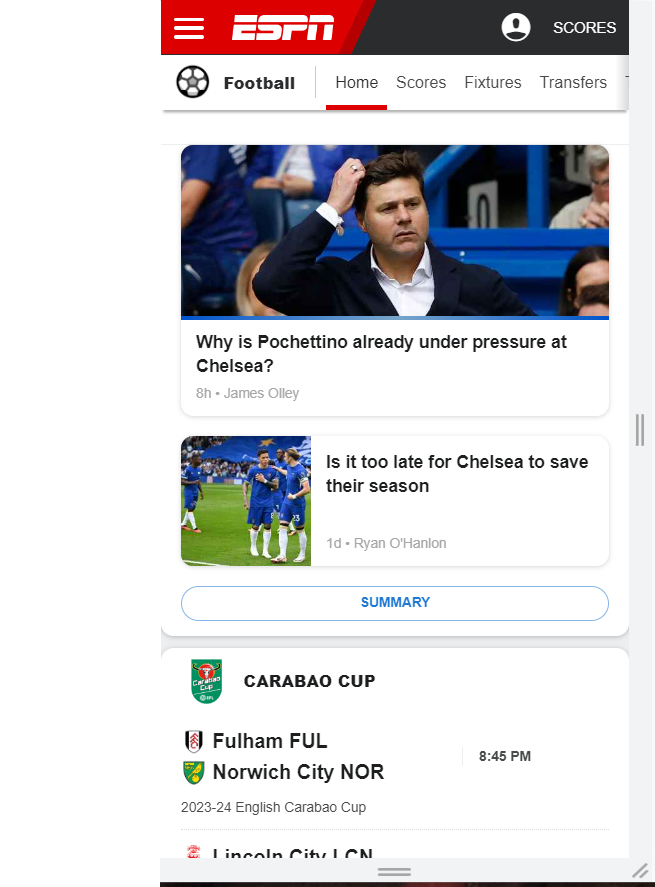
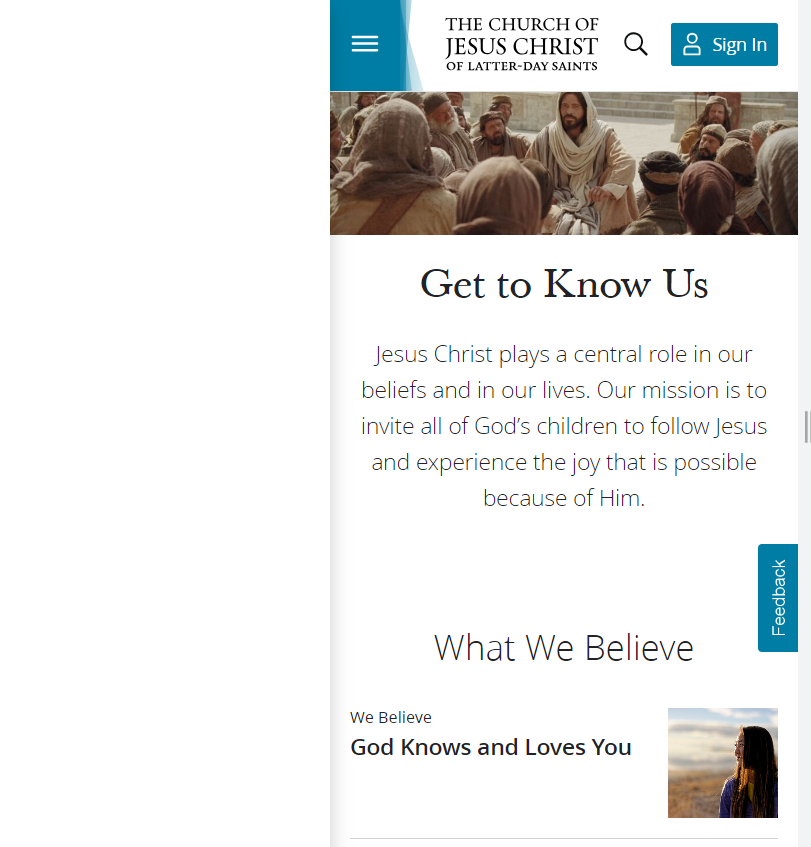

Repetition
https://www.africa.espn.com/soccer/
The ESPN website effectively employs the principle of repetition in its design to ensure a seamless and enjoyable user experience. Key information, such as scores and headlines, are prominently displayed on the homepage and consistently updated throughout the day to keep visitors informed. The use of repetitive color schemes and fonts also contributes to a cohesive look and feel across the site. Furthermore, repetition is utilized in the layout of specific articles or sections, with clear headers and subheadings that help readers navigate through the content effortlessly. Overall, by incorporating repetition into its design strategy, ESPN manages to provide a user-friendly platform that keeps sports enthusiasts engaged and coming back for more.
White Space and Clean Design
https://www.churchofjesuschrist.org/
The use of the principle of white space and clean design on the lds.org website greatly enhances its usability and overall user experience. The ample white space not only creates a sense of simplicity but also allows important elements such as text, images, and links to stand out clearly. This makes it easier for visitors to navigate through the site without feeling overwhelmed or confused. Additionally, the clean design ensures that each page is uncluttered and visually appealing. The strategic use of white space not only improves readability but also emphasizes the key messages being conveyed. By incorporating this design principle, lds.org effectively communicates with its users, providing a calm and organized browsing experience while highlighting important content that aligns with its mission and values in a visually pleasing manner.
Proximity
The amazon home page does a nice job of using the principle of proximity, the platform strategically places related products in close proximity to one another, making it easier for customers to browse and discover new items that they may be interested in. From suggesting complementary accessories for a recently purchased product to displaying similar items based on browsing history, Amazon knows how to keep shoppers engaged and enticed.